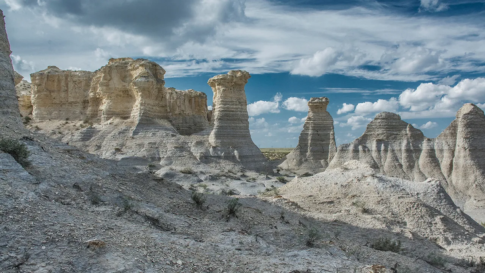
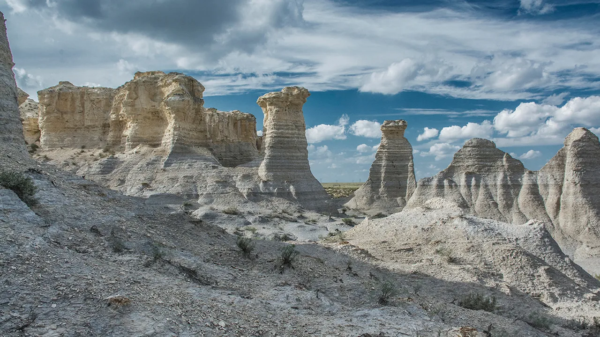

Kansas — AQSHning markaziy qismida joylashgan shtat bo‘lib, 1861-yil
29-yanvarda AQSHga 34-shtat sifatida qo‘shilgan. Kansas ko‘pincha
“America’s Heartland” (Amerikaning yuragi) deb ataladi, chunki u geografik
jihatdan mamlakat markaziga juda yaqin.
🗺️ Geografik joylashuvi:
Shimolda: Nebraska Sharqda: Missouri Janubda: Oklahoma G‘arbda: Colorado
Hududi asosan tekisliklardan iborat. Kansas — AQSHning eng tekis
shtatlaridan biri bo‘lib, keng qamrovli qishloq xo‘jaligi yerlariga ega.
💼 Iqtisodiyoti:
Asosiy tarmoqlar: Qishloq xo‘jaligi — bug‘doy, makkajo‘xori, soya, qoramol
yetishtirish Energetika — shamol energetikasi, neft va tabiiy gaz
Aviatsiya — ayniqsa Wichita shahri "Dunyo aviatsiya poytaxti" deb ataladi
Qurilish materiallari — sement, tuz, ohak Kansas — AQSHda bug‘doy ishlab
chiqarishda yetakchi shtatlardan biri.
🏞️ Diqqatga sazovor joylari:
Monument Rocks — tabiiy tosh yodgorliklar, qadimiy dengiz qoldiqlari
Tallgrass Prairie National Preserve — tekislik o‘tloklari va tabiiy
landshaft Boot Hill Museum (Dodge City) — Vahshiy G‘arb tarixini aks
ettiruvchi muzey Cosmosphere (Hutchinson) — kosmosga oid eksponatlar va
NASA bilan hamkorlik
🎭 Madaniyat:
Kansas o‘zining qishloq madaniyati, kovboy tarixi va Oz kitoblari (The
Wizard of Oz) bilan mashhur. Shtatda xalq musiqa, country va bluegrass
janrlari keng tarqalgan.
 
